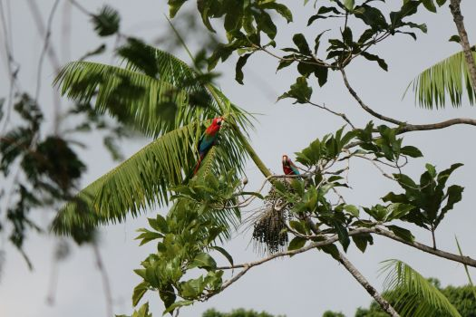
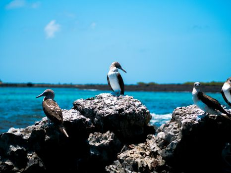
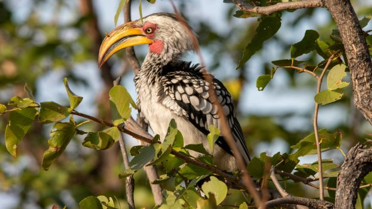

Welcome to Birds R Us
Your premier travel agency dedicated to the joy of birdwatching!
Read More About Us
At Birds R Us we believe that the world’s most
beautiful destinations are best explored through the lens of birdwatching.
Whether you’re a seasoned ornithologist or a curious novice, our expertly curated tours
offer
unforgettable experiences that connect you with nature’s most captivating creatures.

From the lush rainforests of Costa Rica to the serene wetlands of the Everglades, we provide
tailored itineraries that cater to your interests and skill level.
Join us as we embark on exciting journeys filled with breathtaking landscapes, vibrant
ecosystems, and the thrill of spotting rare and exotic birds.
Let’s take flight together and discover the wonders of birdwatching around the globe!
About Us
Welcome to Birds R Us, your premier travel agency dedicated to the joy of birdwatching!
Founded by passionate ornithologists and avid travelers, we specialize in crafting unforgettable
birdwatching adventures across the globe.
Our mission is to connect nature lovers with the beauty of avian life, offering curated trips to
some of the world’s best birding destinations. Whether you’re a seasoned birdwatcher or just
starting out, our expert guides are here to enhance your experience with their deep knowledge and
enthusiasm.
At Birds R Us, we believe in sustainable travel and preserving the habitats we explore. We
partner with local communities and conservation organizations to ensure our trips benefit both
travelers and the environment. Join us in celebrating the incredible diversity of birdlife while
creating memories that will last a lifetime!
Discover the world through the eyes of a birdwatcher with Birds R Us—where adventure takes
flight!

Amazon Rainforest Adventure
Amazon Rainforest Adventure
(Brazil)
- Highlights: Explore the biodiverse Amazon Basin, home to countless bird species including the stunning Guiana Cock-of-the-rock and vibrant toucans.
- Activities: Guided hikes through the rainforest, boat excursions on the Amazon River, and visits to local communities to learn about conservation efforts.
- Best Time to Visit: November to April, during the dry season when bird activity is at its peak.

Galápagos Islands Birding Expedition
Galápagos Islands Birding Expedition
(Ecuador)
- Highlights: Discover unique avian species found nowhere else on Earth, such as the Blue-footed Booby and the Galápagos Penguin.
- Activities: Island-hopping tours, snorkeling with marine life, and guided walks to observe nesting sites and local ecosystems.
- Best Time to Visit: Year-round, but optimal viewing is from June to September when many birds are nesting.

Southern Africa Birding Safari
Southern Africa Birding Safari
(South Africa & Botswana)
- Highlights: Experience the rich birdlife of savannas and wetlands, including species like the African Fish Eagle and the colorful Lilac-breasted Roller.
- Activities: Game drives in Kruger National Park, birding walks in the Okavango Delta, and visits to birding hotspots like the Kalahari Desert.
- Best Time to Visit: September to April, when migratory birds are present and breeding activity is high.